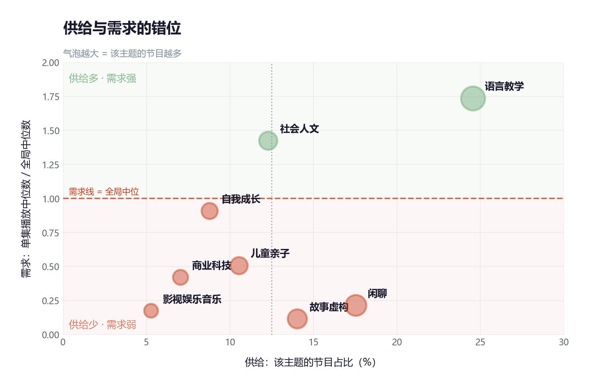
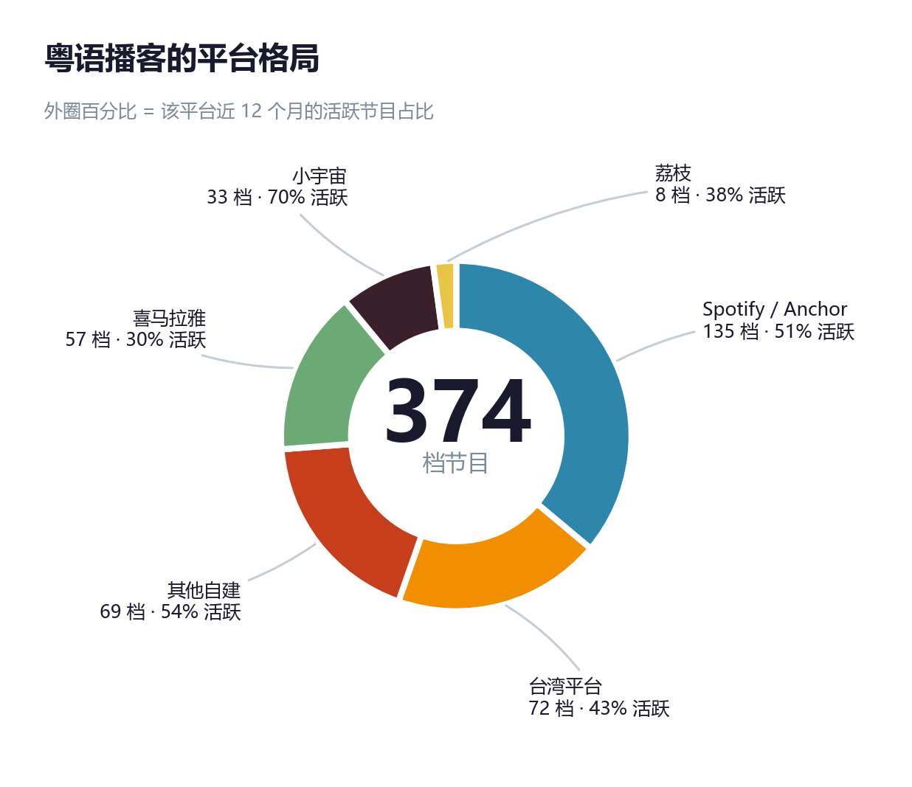
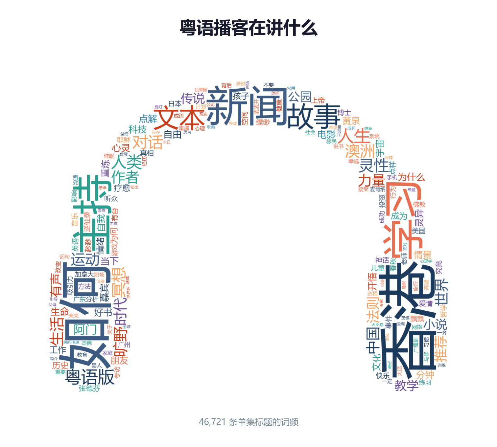
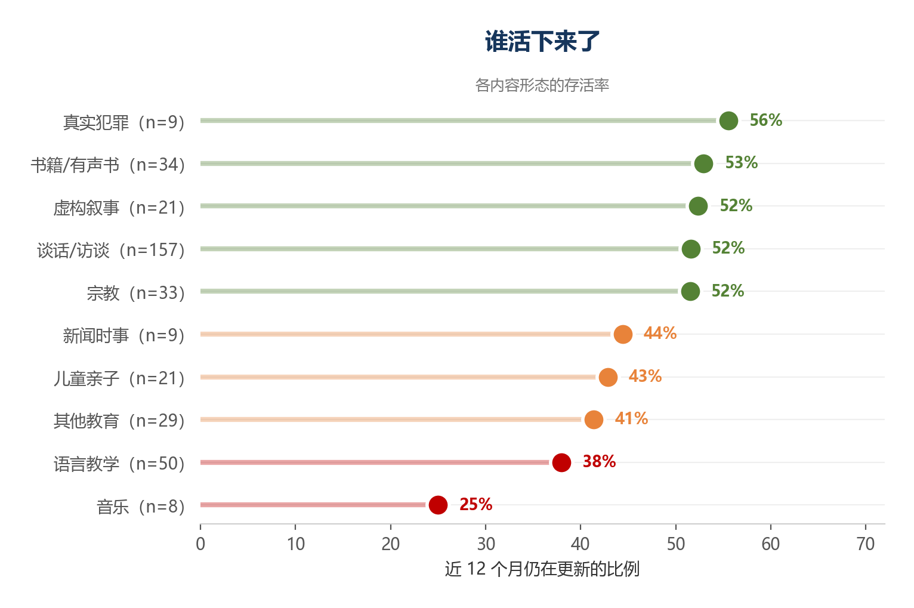
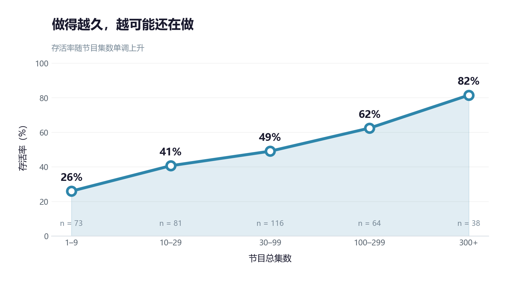
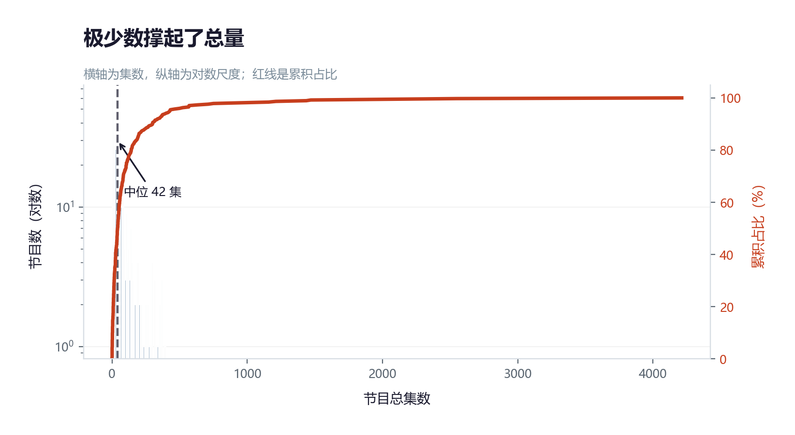
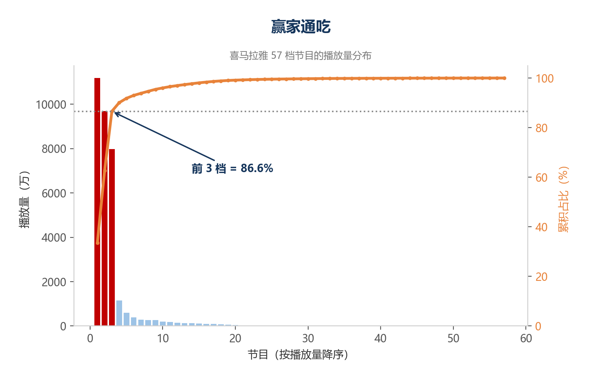
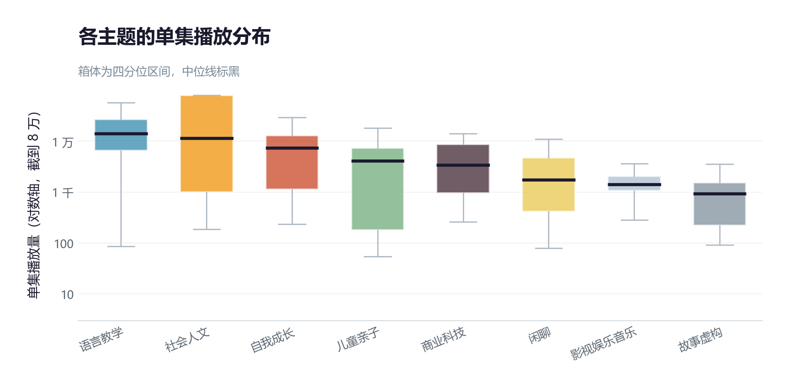
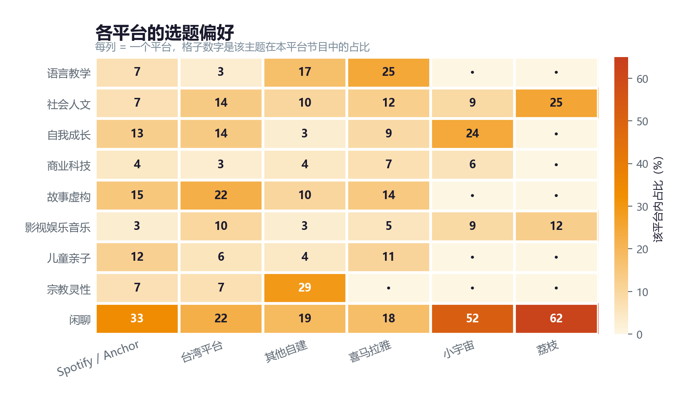

个人项目 · 数据分析
以苹果播客目录为抽样框，采集全量粤语播客，并以播放量作为需求代理指标—— 在同一套框架下同时测量「市场在生产什么」与「听众在消费什么」。
01 — 核心发现
每个数字背后都是一个可以在数据里追溯的结论。
的节目近 12 个月未更新。近两成在 10 集以内停更，停更中位时长 43 个月。
谈话类的单集播放量，只有全局中位数的 22%。而它占了活跃节目的六成。
由前 3 档节目吃掉的播放量。57 档节目里，头部占掉近九成。
语言教学的中位单集时长。它是唯一供需双高的主题，但它不像节目，更像词典。
02 — 图谱
气泡越大表示节目越多；横轴是供给，纵轴是需求。



03 — 生存



04 — 消费



05 — 方法
关键在于数据不理想时的每一次取舍，而不是工具本身。